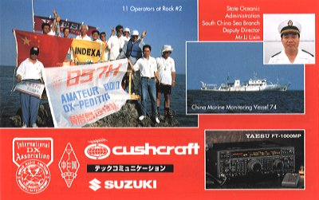
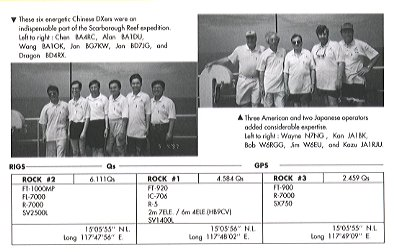
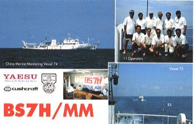
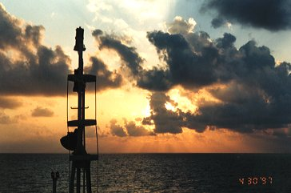

このリポートは1エリアの入感状況です
全国版「50MHz DX Web Cluster」も参考にして下さい
50MHz DX Web Clusterへ
【Back Issues Aug.97】
29-31.Aug.97 お知らせ ！
◎ カナダ・バンクーバーに出掛けて来ます（予定は8月28日～9月10日）。 この間、ページの“更新”は出 来無くなりますが、6mの入感状態はクラスター（Cluster）でチエックされて下さい。 バンクーバーではVE7RJUで運用します。 この時期の6mは、JAに対してオープンの可能性はありませんの で、期待しないで下さい。 滞在中のメール宛先は、harryb@direct.ca です（但し英文のみ）。 【JA1RJU・小笠原 一夫】28.Aug.97
◎ 夏のEsコンデションから、秋のコンデションへの“切り替わり”の時期で、静かな6mですが、SFも徐々 に上昇しています。一時的なものでない事を祈りたいもの。27.Aug.97
◎ 【中国でのアマチュア無線運用の申請方法】 外国人が中国本土でアマチュア無線を運用する際の申請方法は、CRSAからの情報によると次のようになり ます。 △ △ △ 外国人（旅行者）が中国本土でアマチュア局を開局することは出来ませんが、あらかじめ許可を得ると中 国のアマチュア局を運用する事が出来ます。その場合、事前に次の項目を記載した手紙に料金を添えてCRSA に申請しなければなりません。 申請受け付け後、CRSAから“外国人訪問者特別運用許可証”が発行され、 中国のアマチュア局を運用する際には、この許可証が必要となります。 また、同時にその局の連絡担当者 の住所が知らされるので、あらかじめ担当者と運用についての詳細な打ち合わせを行なって下さい。 1.申請先 Liaison Department, Chinesw Radio Aports Association P.O. Box 6106,Beijing 100061 China 2.記載事項 滞在予定年月日と滞在日数。 旅行目的（商用、私用、勉学など）。 運用予定クラブまたは市の名称。 特別な運用上の希望がある場合。 3.添付書類など (1)自国のアマチュアライセンスとパスポートのコピー。 （局免許状と従事者免許証） (2) 申請料 US.$5.00（またはIRC20枚） 4.申請期日 出来るだけ早く。訪問希望日の少なくとも３カ月前。 5.運用 必ず事前にアポイントメントを取り、その局の責任者の指示に従って運用して下 さい。運用する時のコールサインは自国でのコールサイン／中国で運用する局の コールサインです。 ただし、運用する局の責任者の許可があれば、運用する局の コールサインのみでも可能です。 ※ 申請書の様式は任意と思われますが、JARL・国際課で申請書を作成しました。 必要な方は申し込んで 下さい。26.Aug.97
◎ 先にこのコーナーでもお知らせした、KH0/サイパンのレンタル・シャックの概要が発表されました。 運用する場合には、U.S.Aの免許、またはアメリカでの運用許可書（相互運用協定による）を取得している 必要があります。 運用許可書による運用では、周波数、送信電力、電波形式は日本で免許されている範囲 内となります。（ただし、4アマはHFの運用は出来ません）。 機器の設置（配線）やアンテナの組み立ては 各自で行なうことになります。マリアナ・リゾートのレンタル・シャックを利用する場合は、原則として東 京・世田谷旅行倶楽部主催のペディション・ツアーに参加する方が対象となります。 申し込み、問い合わせは下記までご連絡下さい。 〒156 東京都世田谷区桜ケ丘 5-17-4 タビックスジャパン 世田谷旅行倶楽部（担当：渋谷一弘） 電話：03-3420-1600 【レンタル設備一覧】 ○ トランシーバー YAESU FT-1000MP(HF/100W) FT-920(HF+50MHz/100W) ○ アンテナ 3.5～50MHz G.P 7/14/21/28/50MHzＶ型ダイポール 50MHz(4el）HB9CV HF D.P ○ その他 1.8ｍルーフタワー（組み立て済み） 3.0ｍパイプ2本、ステーロープ ローテーター（YAESU G-800G） DC電源（MAX 30A） CWパドル、マイク、ヘッドホン、工具等。25.Aug.97
◎ ハムフェア期間中の落ち込んだコンデションは、今日も続いている。 それでも、SF(ソラー・フラック ス)値は上昇傾向。 ハムフェアでお会いした、南鳥島でお馴染みの、JD1BIY・佐藤さんのお話では、8月26日から南鳥島へ渡 り、JA0SUQ/JD1・斎藤さんと交代する予定。 任期は10月まで。24.Aug.97
◎ ハムフェアは今日が最終日。 われらの“ブース”も無事に役目を果たせたようです。 最後は、両隣の OH2BHのQSL発行、IOTAの説明までまかせられ、忙しい一日でした。 お立ち寄り頂いた皆さんに、改めてお 礼を申し上げます。 ◎ 今年のハムフェアの特徴は、ハンディー機片手に仲間と連絡を取りながら、館内を歩いているハムが少 なくなった事でしょう。 代わりにここでも“携帯電話”が幅を利かしていました。 一対一の連絡にはハン デー機より、“携帯電話”の方が確実ですから、この傾向も仕方の無い事かも知れませんが、ハムが“ハム” を否定しているようで、何か“寂しい”気もします。23.Aug.97
◎ 今日の“目玉”は、OH1RXとOH1TXのコンビ（TXとRXだからではない？）。 われわれ（OH2BHの？）のブースを訪れたVU3NYNのコールも持つOH1RX・Joukoによると、彼らのグループが、 近いうちにインド洋のアンダマン島からの運用を予定しているとの事。 さっそく6mのQRVもリクエストして おきました。 ◎ 6mのアクティブ局が有明のビックサイトに集合！。 明日（24日）までは、6mの入感リポートも極端に 少なくなる予定？？。 国内の“目玉”は、今話題の7L4UPM・江成和己（えなり・かずき）君。八重洲無線 のブースでのサイン会は、黒山の人だかりだった。 今日の“ハムフェア”の話。22.Aug.97
◎ 本日の“入館”状況は、確認出来ただけで南米、アフリカを除く4大陸。 お馴染みのOH2BH、SM0AGD、 G3NUGのヨーロッパ勢、NX1L、K5FUV、W7LNGの米国勢などとコンタクト。ほかにVK4、BY、HL...etc、 初日から賑わっていた...“ハムフェア”の話です。 【ハムフェアで見た新製品】(新製品IC-746) ICOMから、HF・50MHz・144MHz/オールバンド・トランシーバーの新製品、IC-746が発表され、注目を集 めていました。 パワーはそれぞれ、100/100/50Wですが、144MHzはEMEのための免許申請に限り、出力100Wに改造可能との 事。 先発のIC-706とIC-756の中間に位置する機種と思われます。 気になる値段は￥198.000。21.Aug.97
◎ 今日は国内、国外ともコンデションは“死んで”いた？。 発表されている今月のソラーフラックスの値 は、70～82程度。 8月13日をピーク（82.0）に徐々に下降状態。 いずれにしても、この程度の値では6m での“目を見張る”ようなコンデションには程遠い。 21MHzでアフリカやヨーロッパが聞こえ出したのは、 秋の気配か...。20.Aug.97
◎ いよいよ今年もハムフェアの時期になりました。 コンデションの情報を期待してアクセスされた方には 申し訳ないのですが、今日はハムフェアーの準備のため、午後のコンデションはフォロー出来ませんでした。 当初、ハムフェアー参加の予定がなかった“BS7H・DX-Pedi”のコーナーを、急きょ、八重洲無線のブー スの一角に、作る事になったのです。 このため期間中の3日間は、ここに詰めることになりました。 場所は八重洲無線のブースの、“OH2BH”や“IOTA”のコーナーと同じ場所です。 “BS7Hのコーナー”では、BS7H・DX-Pediのビデオの放映、資料の展示、解説...etc など、を予定してい ます。 興味のある方は、ぜひお立ち寄り下さい。19.Aug.97
◎ 日中のコンデションは国内、国外とも上昇しなかったが、19:00を過ぎてから1エリアから、6エリアが 強力に入感していた。 この後、香港とJA0のオープンがリポートされている。18.Aug.97
BD7KW 03:17 50.110 SSB VR2XMT 03:22 50.110 SSB VR2IL 03:25 50.110 SSB VR2XMQ 03:27 50.110 SSB ◎ 本日は、中国本土と香港の入感が1時間程度。 香港の信号は弱い。 BD7KWはDan gan Islandから昨日 戻り、Home QTHからの運用との事。17.Aug.97
◎ 昨日の早々のVK4TLの入感には驚かされたが、“2匹めのドジョウ”はいなかった。 残念ながら昨日の オープンはワッチ出来なかったが、オープンの前後に、46.172MHzのＴＶも入感していたのだろうか？。 VK4TLのQTHは、VK4でも北側なので、案外ブリスベーン近郊のTVとは異なる伝搬だったかも知れないが...。 コンデションもそろそろ“秋の気配”か？。 VR2XMT、VR2XRWなどの6mでアクティブだった局が、今日はAO-10のサテライトに揃って出ていた｡ 先日はVK4AFLもAO-10に出ていたが、サテライトに出ていると、6mのアクティブ局と良く会える。 運用最終日の“BG7”は、今日も午前中に西日本で聞こえていたようだが、1エリアには聞こえなかった｡16.Aug.97
(BG7IB/7 01:42 50.110 JA6QGG) ※（cluster） (BG7LP/7 01:46 50.110 JA3EGE) ※（ 〃 ） (VK4TL 07:10 50.109 CW JI1UHZ) JA0SUQ/JD1 08:30 50.130 SSB Minami torishima（8月26日までの予定） HL2DJW 08:42 50.099 CW BV4PK 08:49 50.120 SSB Taicyu ◎ 午前中に西日本で入感した“BG7”は、BD7JA・Yangのグループが、8月15日から17日までの予定で移動し ている、VR2・HongKongの南方に位置するDan gan Island(IOTA＝AS・0129、GL＝OL72CG）。 QSLは、P.O BOX 1713 GUANGZHOU,CHINA へ。 東日本では49.750、48.250、48.260のTVは強かったが、BG7は入感しなかった？。 夕方からのコンデショ ンでJD、HL、BVと西方面のEsが同時に入感していた。 ◎ JI1UHZ（東京・世田谷）丸野さんから、VK4TL(50.109 CW)の入感のリポートがありました。 時間は16:10JST前位から、15分程度のオープンだったとの事ですが、JA0でもQSOがリポートされています。 この時期の入感は珍しいと思いますが、伝搬はどのような種類のものだったのか興味のあるところ。15.Aug.97
◎ 関東以北は秋を思わせる涼しい（10月中旬の気温とか）1日だった。 ここ2、3日上昇の気配を見せて いた6mも、今日は急激にダウン。 西からの49.750MHzのTVも、ほとんど上昇してこなかった。 “OH2BUA Webcluster”の情報によると、8月12日 14:00zには、北米大陸のVE1PZと、G、PA、ONなどが オープンし、シグナルも今年“最強”だったとか。 この距離は太西洋越えとはいえ、JA－KH6程度のパス。 Ｅｓの伝搬範囲に多くのカントリーがゴロゴロしているヨーロッパは、この時期、アジア西部から、北米大陸 （カリブ海）までが交信の範囲になっている。 G0JHCは、Ｅｓ（NON Ｆ2）伝搬だけで、既に89カントリーと QSOしているとか。 TEP/EsやEs/Tropoの伝搬も含むと、ヨーロッパからＦ2を使わずに、DXCC=100の可能性も あるとのこと。 日本からはTEP/Esのパスはまだ経験していないと思うが、いずれにしても交信相手の少ない日本からは、Es 伝搬だけで“DXCC”とは夢のような話。14.Aug.97
◎ 今日も国外DXの入感は確認出来ない。 相変わらず国内のGW（グランドウェーブ）は伸びている。 「オール秋田コンテストVU97」が、本日12:00～18:00JSTに行なわれ、相手は少ないものの1エリアからも QSOできた。 日曜・祝日以外の平日に行われるコンテストは珍しいが、旧盆休みで全国的に“お休み状態” のこの時期は、コンテストの開催日には狙い目だったかも。 50MHz以上で行われるこのコンテストは、GWが 伸びているこの時期は楽しめる。 ルールもしっかりしているユニークなコンテスト(JARL NEWS 7月号参照)。13.Aug.97
◎ 国内DXは昨日同様、GWと近場のEs（スキャッター）がFB。 普段はあまりQSO出来ない北海道（8エリア） と、東北南部（7エリア）がFBにQSO出来ている。 49.750MHzが強力だったものの、国外DXの入感は確認出 来なかった。12.Aug.97
VR97?W? 07:14 50.110 SSB CQ/QRM RW0CD 07:37 50.110 CW/SSB CQ HL5YDP 08:46 50.074/067 CW ◎ 久し振りに広範囲のオープンで賑わう。 午前中からFBだった8エリア方面に加え、夕方4時(JST)頃 からは4、5、6エリアが強力。Esの伝搬では、東京から北方向は7エリア（十和田）、西方向は3（和歌山）、 4までが強力に聞こえた。 16:00～18:00JST頃は、沖縄・北大東島から、北海道までが同時にオープン。 RW0CDはCWとSSBで短時間CQを出し、すぐ引っ込む。 VR97???のCQは比較的強かったものの、それ以上に 強い西方向からのバズにかき消されていた。 韓国方面も強力だったが、西方向のバズによるQRMが激しい。 HL1LTC、HL2DJWのほか、JD1BJPなども リポートされている。 このコンデションは「ペルセウス座流星群」がピークをむかえて（極大日8月12～13）、急激に影響を受 けているものと思われます。「ペルセウス座流星群」は、12月中旬の「ふたご座流星群」に続き、規模の 大きな流星群で、MSによる伝搬も楽しめます。 しかし、この時期はEsによる影響を受けてしまうため、 本来のMSのスリルは味わえない（連続して入感してしまうため）。 ただ、夜間から早朝にかけてのGWは、 稼ぎ時。 このペルセウス流星群による影響は8月19日頃までで、その後は急激に衰える。11.Aug.97
◎ 5月30日と6月1日に6mでオープンした、パラオのT88JZ(OP・JE7RJZ・野田尚紀さん)は、6月1日には7時間 近い長時間の大オープンがあった。 今回の6mでの全QSO数は、897（CW=232、SSB=665）局だった（BV=4、HL=1を含む）。 T88JZのQSLカードはJA7FWR(〒020 岩手県盛岡市中央通3-4-27 畑澤博巳）あてSASEのダイレクトで。 パラオにはビューローがないので、JARL経由で請求の場合は「Via JA7FWR」と明記すること。10.Aug.97
◎ 午前中、北方面（国内）が上昇。 昨年あれだけ頻繁に聞こえていたモンゴル(JT1KAA/JT1BV)が、今年は まだ聞こえてこない。 これはコンデションのせいではなく、単なるアクティビティの問題。09.Aug.97
1997・BS7HのQSLは順次発行が続けられているが、QSLマネジャー（日本の局は全てJA1BK）宛てに送る際 には“一通のSASEに全てのデータを記入して”請求するようにして下さい。 例 えば、6mとHF帯でQSOした局が、6mだけを請求しても、HF帯のデータが届くまではQSLは“保留”されてし まいます。 既に発送済みの局で“記入漏れ”の局は、追加データを「葉書」で通知して下さい。 記入データ以外のQSLは不要という局も、その旨を「葉書」でお知らせ下さい。 8月9日現在、下記の局の QSLが保留されています。 JA1MJ JA2AKW JA3DM JE4MZA JA6BMR JE7MQB JA8VZY JR9LKE JA1GFI JA2DLM JA3BVJ JA6RIL JH8JGG JA1QVR JA2VQF JH3HTD JR6VSP JP1IOF JK2IKQ (De JA1BK)
◎ BS7H・DX-PediのQSL請求時の注意 ！
○ 最近はDX局（特にDX-Pediなど、大量にQSOする局）のログをコンピューターで処理しているQSLマネジ ャーが多く、タグシールにデータを打ち出して、QSLに貼り付ける方法が一般的になっています。 これらの局に送るQSLは“立派なもの”は必要ありません（処理後は廃棄処分となることが多い）。 出来るだけ片面刷りで、コールサインとデータが“一覧”出来るものが、処理しやすく好まれています。08.Aug.97
◎ ここ2、3日は西方面のTVバズはほとんど入感しなくなっている。 ひと頃、終日フルスケールで聞こえ ていた49.750MHzも、午後は全然聞こえないこともある。 そろそろEsシーズンの終わりが近づいている予感。07.Aug.97
◎ 今年に入ってから50MHZ帯が組み込まれたRIGの発売が各メーカーから相次ぎましたが、先発のIC-756、 TS-570に続き5月から本格的に市場に出回った八重洲無線のFT-920は、性能や価格の魅力からか購入される 局も多いと聞きます｡ 私自身、先のBS7HやKH2K/AH0の運用でこのRIGを使って見ましたが、大きさを気に しなければ50MHz専用機としても十分満足出来るものと思われます。ただ、6mでDXを追いかけている者にと ってちょっと気になった事は、50MHz帯以下が48MHzまでしか受信出来ない事です。 6mのDXオープンをいち早く知るためには40MHz帯のTV電波をモニター出来る事が不可欠なのですが、これ までのFT-655では対応していた48MHz帯以下の受信範囲は、新製品のFT-920には無いのです。 ヨーロッパのロングパスのオープンを知るために、48.250MHz前後のTVが格好のパイロットとなった事は、 既に皆さんはご存知の事と思います。また、最も身近なＤＸであるオーストラリアの46.170MHzやニュージー ランドのTV（45MHz帯）がオープンの目安として有名です。この他にも南米、北米のオープンの目印となる “電波のパイロット”はこの40MHz帯に多いのです。 さて、それでは今後発売されるFT-920が、48MHz以下が受信出来るように“改良”されるのでしょうか。 残念ながら今のところ答えは“NO”との事です。 おそらく理由は“40MHz帯の受信まで保証出来ない”と言 う事になるのでしょうか。 メーカーサイドでも受信範囲を40MHzまで下げる試みは実際に行なったそうです。 FT-920の一部の回路変更と若干の部品の取り付けで、受信範囲の拡張は可能との結論ですが、製品化する予定 は無いとの事。 個人的に改造したい方のために、変更部分の公開は行なうとの事なので、内容が分り次第この ページでお知らせしたいと思います｡ ただし、改造する事によって「技適」対象外の製品になりますので、念のため。06.Aug.97
JD1BIY 08:43 50.110 SSB Minami Torishima ◎ 南鳥島から再びJD1BIY・佐藤さんがQRVしている。 今回の滞在は8月12日までで、その後はJA0SUQ・ 斎藤さんが8月26日まで滞在するとのこと。 佐藤さんは10月下旬に再び南鳥島の勤務に戻られる予定。 JD（南鳥島）→JAは朝と夕方の2回のパスがある。05.Aug.97
◎ 終日強力に入感していた49.750MHzのTVも、最近は午後から急激に信号は弱くなる。◎ 1997 BS7H のQSLを紹介します




04.Aug.97
◎ 中国・広州市のBD7JA・Yangのグループが予定している中国領の“Dan Gan Island”からの移動運用は 8月15日（開始時間は未定）から8月17日の07:00z（16:00JST）までの予定で行われる。 使用周波数、RIG、参加メンバーは次の通り。 ○周波数 7.003 CW 7050 SSB 14.050 CW 14050 SSB 21.070 CW 21300 SSB 28.070 CW 28480 SSB 50.120 CW/SSB ○RIG ○ANT TS-690s 730V(V dipole) IC-706 A4S TS-790 50MHz HB9CV(5 ele) 144MHz(7 ele) ○参加 Member BG7IA Wu BG7IB Bandit Chen BG7JH Chen BG7KT Zhang BG7KR Zhang BG7LP Eric Tsang BG7NI Chen BD7JA Yang BD7JG Jan BD7IX Lu BD7KW Zhang ○特別のコールは使用せず（BG7IA/7、BG7IB/7...など、個人コールでの運用となる）。03.Aug.97
RW0CD 01:00 50.110 CW02.Aug.97
VR2IL 00:57 50.120 SSB VR97LC 02:00 50.130 SSB BV2SR 02:40 50.120 SSB01.Aug.97
◎ 4月30日から5月3日にかけて運用された「1997 BS7H」のQSLの発行がいよいよ開始された。 「JA1BK・Homepage」でQSO確認のための“検索”が利用出来るが、このサービスは外国局のみ。 ◎ 7月下旬までBO0M（台湾・馬祖島）がアクティブにQRVして、50.115MHzを賑わしてくれたが、中国・広州 市のBD7JA・Yangからの情報では、彼のグループが8月15日から17日にかけて香港から北東20マイルほどの所 にある中国領の“Dan Gan Island”からの運用を予定している。 残念ながらDXCC上ではNewとはならないが、 IOTAアワードには使えそう。 中国本土はテレビの関係で自由にQRV出来ない場所が多いため、中国の局は今年 もほとんど聞こえなかった。 この島からQRVが出来れば久々の“中国本土”の局となる。 中国大陸の沿岸沿 いにはたくさんの“島”が点在しているが（BY5に近い馬祖島もその一つ）、案外テレビの妨害を気にせず運 用出来る場所があるかも｡ 8月中旬の中国方面のコンデションを期待しましょう。
| Index | Back Issues |
|---|---|
 |
最新情報へ戻る |
 50MHz DX Web Clasterへ
World Amateur Radio Infomationへ
50MHz DX Web Clasterへ
World Amateur Radio Infomationへ